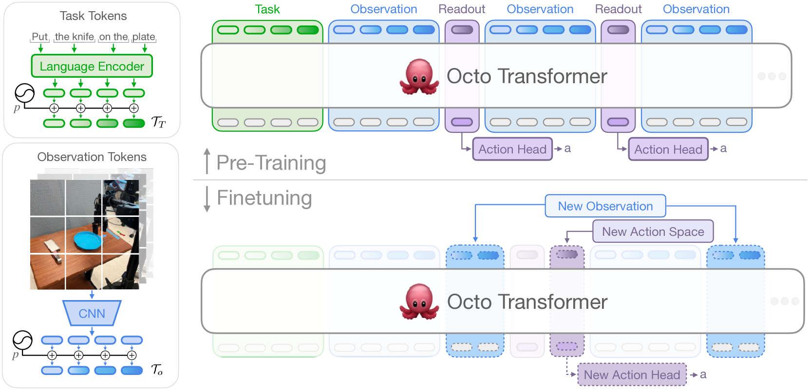
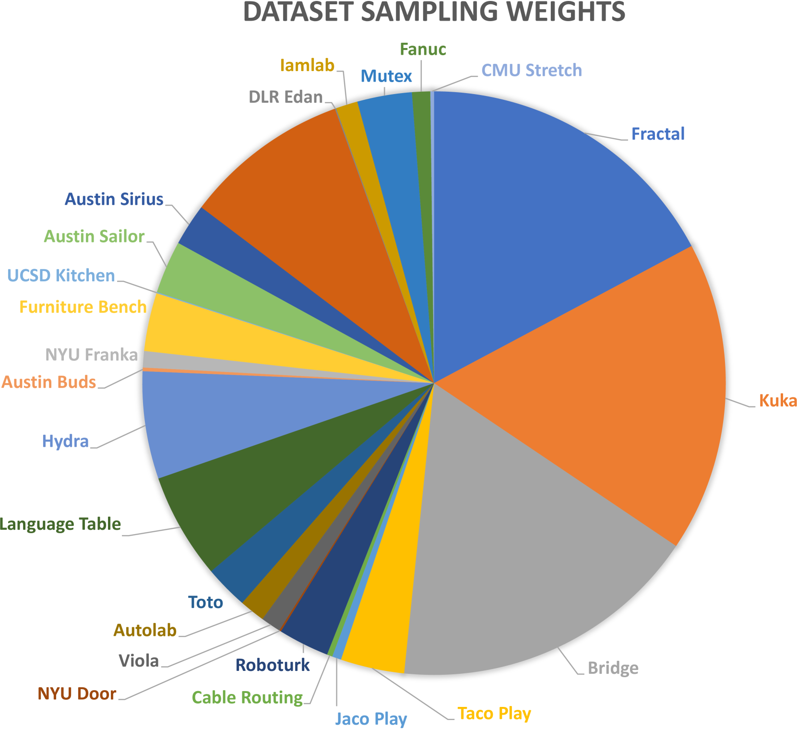

Dibya Ghosh, Homer Walke, Karl Pertsch, Kevin Black, Oier Mees, Sudeep Dasari 외 (Octo Model Team) · Chelsea Finn, Sergey Levine · UC Berkeley · Stanford · Carnegie Mellon · Google DeepMind
제출: 2024년 5월 20일 (v2 5월 26일) · 백본 Transformer (Octo-Small 27M / Octo-Base 93M) · 학습 TPU v4-128, 14h
한 줄 요약 (TL;DR)
Open X-Embodiment 25개 데이터셋 800k 궤적으로 사전학습한 최초의 대규모 오픈소스 generalist 로봇 정책. 언어·목표이미지 조건, diffusion action head, 그리고 관찰·태스크 토큰과 분리된 readout token + block-wise attention으로 새 로봇에 카메라·힘 센서·관절 액션 등이 추가돼도 재학습 없이 finetuning이 가능. 9개 로봇에서 zero-shot·finetune 모두 검증(WidowX 72%·RT-1 47%·UR5 40% zero-shot; finetune 6도메인 평균 72% vs from-scratch 20%). 이후 등장한 OpenVLA·π0·InternVLA의 공개 baseline·데이터 조합·아키텍처 참조 표준.
1배경 · 문제의식
Robotics는 언어·비전 도메인처럼 "사전학습된 generalist 모델을 finetune"하는 워크플로가 정착되지 않았다. RT-1/RT-2 등 대규모 정책이 존재하지만 비공개 checkpoint이거나 특정 관찰/액션 스펙에 하드코딩되어 새 로봇·새 센서·새 액션 공간에 유연하게 붙일 수 없다. Octo는 (a) 대규모·다양한 로봇 데이터 사전학습, (b) 관찰·태스크·액션 공간을 모듈식으로 교체 가능한 아키텍처, (c) 완전 공개(가중치·데이터 파이프라인·학습 스크립트)의 세 축으로 이 갭을 메운다.
2핵심 Contribution
최초의 대규모 오픈소스 generalist policy — 800k 궤적으로 사전학습된 Octo-Small(27M)/Octo-Base(93M) 가중치를 CC BY 4.0으로 공개. JAX/PyTorch 데이터 로더까지 완비.
모듈식 finetuning 아키텍처 — readout token + block-wise masked attention으로 새 관측(예: F/T 센서)·새 액션 헤드(joint pos, bimanual)를 재사전학습 없이 붙일 수 있음. 9개 이질적 로봇에 5시간 GPU finetuning으로 즉시 배포.
Diffusion action head + 광범위 ablation — 연속 액션은 DDPM diffusion head가 MSE(35%)·discretization(18%) 대비 압도적(83%). ViT vs ResNet, 25-mix vs 11-mix vs 단일 로봇 데이터, 모델 크기(Tiny/Small/Base) 등 후속 VLA 설계 결정에 참고되는 최초의 체계적 어블레이션을 제공.
3Method
아키텍처
Octo는 단일 트랜스포머 백본이 세 종류의 토큰을 처리한다: (1) 언어 토큰(t5-base 111M로 인코딩된 16개 임베딩), (2) 관측 토큰(third-person 이미지는 16×16 patch → 256 tokens, wrist cam은 64 tokens; 얕은 CNN 임베딩), (3) readout tokens. readout은 다른 토큰들에 attend만 하고 attend 받지 않음 — 관측/태스크 토큰의 표현을 오염시키지 않으면서 임의의 action head를 갈아 끼울 수 있다.
Block-wise masked attention
토큰들을 [task, obs_t=0, obs_t=1, ..., obs_t=H, readout_t=0, ..., readout_t=H] 블록으로 배열하고, 블록 단위 causal mask를 적용. 이 구조 덕에 학습 후 다음이 모두 가능:
새 관측 modality(F/T, 깊이, wrist 추가) 삽입 → 해당 obs 블록 하나만 추가.
새 action head 교체 → readout 블록 뒤에 새 head만 연결.
언어→goal-image 조건 변경 → task 블록만 교체(사전학습 시 random conditioning dropout으로 이미 둘 다 지원).
Diffusion Action Head
액션 공간이 연속(7-DoF EEF Δpose 등)일 때, readout 표현을 조건으로 하는 DDPM 확산 헤드(3-layer MLP, hidden 256, cosine 노이즈 스케줄, 20 denoising step)로 action chunk(H스텝)를 생성. 트랜스포머 forward는 1회만, 반복 denoising은 lightweight head 안에서만 일어나 실시간 제어 가능.
사전학습 데이터 & 학습
데이터셋
Open X-Embodiment 중 25개 큐레이션, 총 800k 궤적. 상위 3종 각 17% (Fractal, Kuka, Bridge), 22종 롱테일
큐레이션
비-이미지 데이터·비-delta EEF·중복/저해상도 제외; 다양성 데이터에 가중치 2배
사전학습 태스크
hindsight goal-image + 언어 지시 (random dropout으로 둘 중 하나 또는 둘 다 학습)
모델 크기
Tiny 10M / Small 27M / Base 93M. Base는 12층·hidden 768·MLP 3072·12-head
사전학습 자원
TPU v4-128, batch 2048, 300k steps, 약 14시간
Finetuning
단일 A5000 GPU 5시간, ~100 trajectory, 도메인별 동일 하이퍼
4실험 결과
Zero-shot 성능 (Figure 3)
Robot
Condition
Octo-Base
비고
WidowX
Language
72%
RT-1-X +29pt 평균
WidowX
Goal-image
97%
RT-1 Robot
Language
47%
사전학습 도메인 중
UR5
Language
40%
Zero-shot 평균 RT-1-X 대비 +29pt. RT-2-X(55B, 비공개)와 비슷한 수준을 93M 오픈 파라미터로 달성.
Finetuning (Table I) — 6개 새 도메인, ~100 데모
Domain
새로운 특성
Octo Ft
From-scratch
VC-1
Berkeley Insertion
F/T 관측 추가
70%
—
—
Stanford Coffee
새 물체·환경
75%
—
—
Berkeley Coke
새 embodiment
100%
—
—
Berkeley Bimanual
joint-position action
80%
—
—
6도메인 평균
—
72%
20%
15%
모두 단일 A5000, 5시간, 도메인별 동일 하이퍼. Octo finetuning이 from-scratch 대비 +52pt, 비전 사전학습 표현(VC-1) 대비 +57pt.
5Ablation (주요 발견)
Table II — 설계 어블레이션 (aggregate score)
Ablation 축
변형
Score
Action head
Diffusion (default)
83
MSE (continuous)
35
Discrete tokenization
18
Vision encoder
ViT patch (default)
83
ResNet-50 + Transformer
70
Pretrain data
25-dataset OXE mix
83
RT-X 11-dataset mix
60
Single robot (Bridge only)
43
확산 헤드가 압도적: continuous MSE(35), discrete(18) 대비 diffusion 83 — Octo의 가장 강한 실용 결론. 이후 대다수 VLA(π0의 flow-matching 등)가 이 방향을 계승.
데이터 다양성 > 데이터 양: 25-mix(83) > 11-mix(60) > single(43). 단일 로봇 데이터로는 finetuning 이득이 급락.
모델 스케일: Tiny < Small < Base로 monotonic 향상, Base가 대부분 태스크에서 최고.
한계: wrist cam은 사전학습 데이터 중 27%만 포함 → wrist 활용 태스크에서 상대적 약세. 언어 label도 56%만 있어 language > goal-image 조건이 살짝 열세.
6핵심 Figure / Table

Figure 1 — Octo 개요 & finetune 커버리지. Open X-Embodiment 800k 궤적으로 사전학습한 단일 트랜스포머 정책이 9개 서로 다른 로봇(WidowX, Franka, UR5, xArm, 양팔 등)에 finetuning으로 이식되는 그림. (출처: arXiv:2405.12213)

Figure 2 — Octo 아키텍처. [task tokens] + [obs tokens per timestep] + [readout tokens]을 블록 단위 causal mask로 처리하고, readout에 diffusion action head를 붙여 action chunk를 생성. 새 obs/action 붙이려면 블록/헤드만 추가하면 되는 구조. (출처: arXiv:2405.12213)
Table II — 어블레이션. Diffusion head 83 vs MSE 35 vs Discrete 18. 25-dataset mix 83 vs 11-mix 60 vs single-robot 43. 후속 VLA 설계에서 확산 head + 다양성 우선 데이터 큐레이션이라는 결론의 근거로 자주 인용됨.